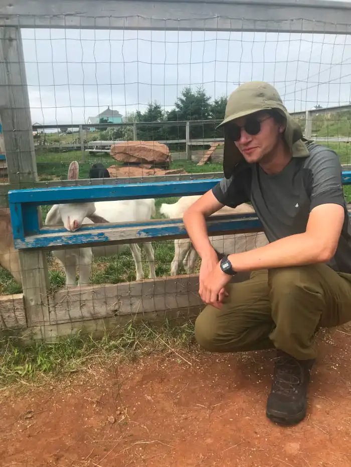

Bienvenue
J'étudie les mathématiques à l'Université du Québec à Montréal (UQÀM). Ce site sert à stocker mes notes personnelles et aussi certaines de mes idées, lorsque j'ai la force de les mettre en mots !
J'ai essayé, autant qu'il m'est possible, de minimiser l'impact écologique de ce site :
- pas de Javascript ici : les équations sont simplement des images « incrustées » (embedded) dans la page et qui sont générées à partir de code LaTeX au moment où je compile le site;
- bien que je puisse écrire mes posts en Markdown grâce à Pandoc via Hakyll, ils deviennent de très simples pages HTML, très légères et rapides à charger;
- j'ai écris le CSS moi-même afin de m'assurer qu'il soit optimal (pas de classes orphelines);
- les images décoratives sont au format WEBP plutôt que PNG, JPEG ou autre, afin de minimiser leur taille.
J'avais à l'origine simplement demandé à Pandoc de générer du MathML à partir de mon code LaTeX dans les articles. Ça marchait très bien mais seulement sur Firefox, puisque plusieurs moteurs de rendu (y compris WebKit et Blink) ne supportent pas encore MathML. Pour l'instant j'y vais donc avec la solution de rendre les équations en images, puis de les inclure de façon automatique dans mes articles.